SVI patterns (slide-seq mouse brain dataset)
This notebook showcases the SVI patterns using the slide-seq mouse brain dataset
The utils.py file can be downloaded from https://github.com/deepomicslab/SPIDER-paper/blob/main/notebooks/utils.py
[10]:
import sys
import os
import numpy as np
import pandas as pd
import anndata
import scanpy as sc
import matplotlib.pyplot as plt
import time
R_path = 'source /etc/profile;module load GCC/11.2.0 OpenMPI/4.1.1 R/4.2.0 Anaconda3/2022.05 R-bundle-Bioconductor/3.15-R-4.2.0;R'
from spider import SPIDER
op=SPIDER()
%reload_ext autoreload
%autoreload 2
from utils import *
ds = 'slide-seq-v2'
sample_name = 'mousebrain'
adata = anndata.read_h5ad(f'../example_datasets/{ds}/{sample_name}/adata.h5ad')
if not os.path.exists(f'../results/{ds}'):
os.makedirs(f'../results/{ds}/')
out_f = f'../results/{ds}/{sample_name}/'
if not os.path.exists(out_f):
os.makedirs(out_f)
if len(adata.obs_names) > 200:
sc.pp.filter_genes(adata, min_cells=20)
idata = anndata.read_h5ad(f'../results/{ds}/{sample_name}/idata.h5ad')
# start = time.time()
# idata = op.prep(adata, cluster_key=adata.uns['cluster_key'], is_human=adata.uns['is_human'], is_sc=adata.uns['is_sc'], itermax=1000, imputation=True, normalize_total=True)
# idata.write(f'{out_f}idata.h5ad')
# runtime = time.time()-start
# with open(f'{out_f}ot_runtime.txt', 'w') as f:
# f.write(str(runtime))
start = time.time()
op.svi.tf_corr(idata, adata, adata.uns['is_human'], out_f, threshold=0.3, n_jobs=30, overwrite=False, step=None, keep_top_score=5)
runtime = time.time()-start
with open(f'{out_f}tf_runtime.txt', 'w') as f:
f.write(str(runtime))
start = time.time()
idata, meta_idata = op.find_svi(idata, out_f, R_path, alpha=0.3, overwrite=False, n_jobs=1, svi_number=0)
runtime = time.time()-start
with open(f'{out_f}svi_runtime.txt', 'w') as f:
f.write(str(runtime))
Using mouse pathway dataset.
src dest
Man1a_Mgat1 Man1a Mgat1
Man1b1_Man1a Man1b1 Man1a
Nrg2_Egfr Nrg2 Egfr
Nrg2_Erbb2 Nrg2 Erbb2
Nrg2_Erbb3 Nrg2 Erbb3
Found 1037 SV pathway nodes.
Found 59/69 receptors (86%) with SV target genes.
Testing 114/163 LRIs (70%) with SV target genes.
106/114 LRIs (93%) are predicted to be activated by downstream genes (threshold=0.3).
Excluded 8/163 LRIs (5%) without SV support (threshold=0.3).
using 149*149 SOM nodes for 111461 points
Added key nnSVG in idata.uns
Added key SOMDE in idata.uns
Added key SpatialDE2 in idata.uns
Added key SpatialDE in idata.uns
Added key SPARKX in idata.uns
Added key scGCO in idata.uns
Added key moranI in idata.uns
Added key gearyC in idata.uns
finished running all SVI tests
Using the results from SVI identification methods: ['SOMDE' 'SpatialDE' 'SpatialDE2' 'SPARKX' 'nnSVG' 'scGCO' 'gearyC'
'moranI']
126/163 SVIs identified (threshold=0.01).
Excluding 7 genes without TF support
119/163 tf-supported SVIs identified.
Added key pattern_score in idata.obsm and method results and running time in uns
[11]:
svi_df, svi_df_strict = op.svi.combine_SVI(idata,threshold=0.01)
op.svi.eva_SVI(idata, svi_df_strict)
Using the results from SVI identification methods: ['SOMDE' 'SpatialDE' 'SpatialDE2' 'SPARKX' 'nnSVG' 'scGCO' 'gearyC'
'moranI']
126/163 SVIs identified (threshold=0.01).
Excluding 7 genes without TF support
119/163 tf-supported SVIs identified.
evaluating with ['moranI' 'gearyC' 'SOMDE' 'nnSVG']
p-value annotation legend:
ns: p <= 1.00e+00
*: 1.00e-02 < p <= 5.00e-02
**: 1.00e-03 < p <= 1.00e-02
***: 1.00e-04 < p <= 1.00e-03
****: p <= 1.00e-04
Geary
C (rev.)_SVI vs. Geary
C (rev.)_Excluded: Mann-Whitney-Wilcoxon test greater with Benjamini-Hochberg correction, P_val:1.897e-06 U_stat=3.855e+03
Moran
I_SVI vs. Moran
I_Excluded: Mann-Whitney-Wilcoxon test greater with Benjamini-Hochberg correction, P_val:1.612e-06 U_stat=3.864e+03
FSV
(SOMDE)_SVI vs. FSV
(SOMDE)_Excluded: Mann-Whitney-Wilcoxon test greater with Benjamini-Hochberg correction, P_val:1.562e-07 U_stat=3.987e+03
LR
(SOMDE)_SVI vs. LR
(SOMDE)_Excluded: Mann-Whitney-Wilcoxon test greater with Benjamini-Hochberg correction, P_val:2.981e-07 U_stat=3.954e+03
LR
(nnSVG)_SVI vs. LR
(nnSVG)_Excluded: Mann-Whitney-Wilcoxon test greater with Benjamini-Hochberg correction, P_val:7.161e-07 U_stat=3.908e+03
TF corr_SVI vs. TF corr_Excluded: Mann-Whitney-Wilcoxon test greater with Benjamini-Hochberg correction, P_val:4.321e-06 U_stat=2.049e+03
[11]:
| Category | Metric | value | |
|---|---|---|---|
| 0 | Excluded | Moran\nI | 1.000000 |
| 1 | SVI | Moran\nI | 0.990115 |
| 2 | SVI | Moran\nI | 0.964646 |
| 3 | SVI | Moran\nI | 0.956778 |
| 4 | SVI | Moran\nI | 0.943627 |
| ... | ... | ... | ... |
| 972 | Excluded | TF corr | 0.531543 |
| 973 | Excluded | TF corr | 0.537164 |
| 974 | Excluded | TF corr | 0.376015 |
| 975 | Excluded | TF corr | 0.480949 |
| 976 | Excluded | TF corr | 0.543410 |
929 rows × 3 columns
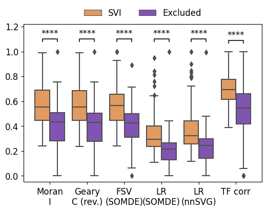
[12]:
import matplotlib.pyplot as plt
op.vis.pattern_LRI(idata,show_SVI=10, spot_size=1)
plt.tight_layout()
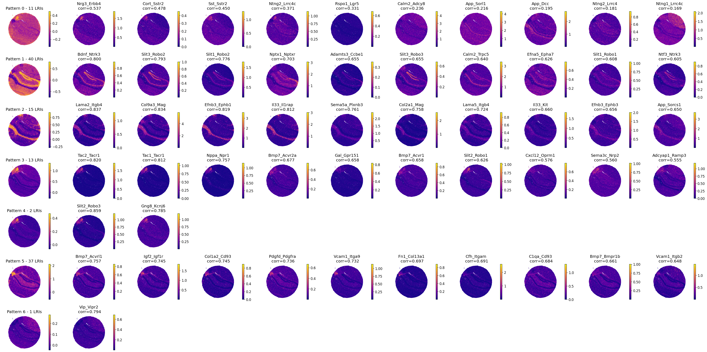
[13]:
plt.figure(figsize=(6,3.5))
op.svi.eva_pattern(idata)
p-value annotation legend:
ns: p <= 1.00e+00
*: 1.00e-02 < p <= 5.00e-02
**: 1.00e-03 < p <= 1.00e-02
***: 1.00e-04 < p <= 1.00e-03
****: p <= 1.00e-04
1_non-member vs. 1_member: Mann-Whitney-Wilcoxon test smaller with Benjamini-Hochberg correction, P_val:3.707e-19 U_stat=3.000e+00
0_non-member vs. 0_member: Mann-Whitney-Wilcoxon test smaller with Benjamini-Hochberg correction, P_val:1.684e-06 U_stat=8.700e+01
2_non-member vs. 2_member: Mann-Whitney-Wilcoxon test smaller with Benjamini-Hochberg correction, P_val:2.174e-10 U_stat=0.000e+00
3_non-member vs. 3_member: Mann-Whitney-Wilcoxon test smaller with Benjamini-Hochberg correction, P_val:7.921e-09 U_stat=2.500e+01
4_non-member vs. 4_member: Mann-Whitney-Wilcoxon test smaller with Benjamini-Hochberg correction, P_val:8.546e-04 U_stat=3.000e+00
5_non-member vs. 5_member: Mann-Whitney-Wilcoxon test smaller with Benjamini-Hochberg correction, P_val:7.028e-17 U_stat=7.700e+01
6_non-member vs. 6_member: Mann-Whitney-Wilcoxon test smaller with Benjamini-Hochberg correction, P_val:8.403e-03 U_stat=0.000e+00
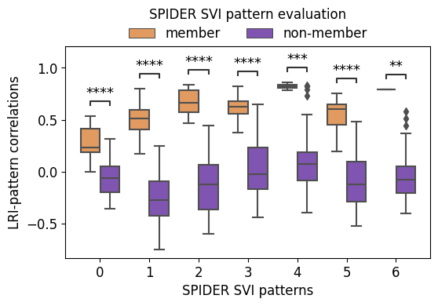
[14]:
mouse_brain_pattern_corr(idata, adata)
Added key cell_pattern in idata.uns
Added key cell_score in idata.uns
Added key interaction_pattern, interaction_score in adata.obsm
WARNING: Default of the method has been changed to 't-test' from 't-test_overestim_var'
WARNING: Default of the method has been changed to 't-test' from 't-test_overestim_var'
Added key rank_interaction_score_groups, rank_interaction_pattern_groups in adata.uns
['Lama2_Itgb4' 'Col9a3_Mag' 'Efnb3_Ephb1' 'Il33_Il1rap']
['Bdnf_Ntrk3' 'Slit3_Robo2' 'Slit1_Robo2' 'Nptx1_Nptxr']
['Bdnf_Ntrk3' 'Slit3_Robo2' 'Slit1_Robo2' 'Nptx1_Nptxr']
['Bmp7_Acvrl1' 'Igf2_Igf1r' 'Col1a2_Cd93' 'Pdgfd_Pdgfra']
['Bmp7_Acvrl1' 'Igf2_Igf1r' 'Col1a2_Cd93' 'Pdgfd_Pdgfra']
['Tac2_Tacr1' 'Tac1_Tacr1' 'Nppa_Npr1' 'Bmp7_Acvr2a']

[15]:
idata = idata[:, idata.var['is_svi']==1]
adata, adata_lri, adata_pattern = op.cell_transform(idata, adata, label=adata.uns['cluster_key'])
adata_lri.obsm['spatial'] = adata[adata_lri.obs_names].obsm['spatial']
adata_pattern.obsm['spatial'] = adata[adata_lri.obs_names].obsm['spatial']
Added key cell_pattern in idata.uns
Added key cell_score in idata.uns
Added key interaction_pattern, interaction_score in adata.obsm
WARNING: Default of the method has been changed to 't-test' from 't-test_overestim_var'
WARNING: Default of the method has been changed to 't-test' from 't-test_overestim_var'
Added key rank_interaction_score_groups, rank_interaction_pattern_groups in adata.uns
[17]:
sc.pp.neighbors(adata_pattern, n_neighbors=10, use_rep='X')
sc.tl.paga(adata_pattern)
sc.pl.paga(adata_pattern, plot=False) # remove `plot=False` if you want to see the coarse-grained graph
sc.tl.umap(adata_pattern, init_pos='paga')
sc.tl.umap(adata_pattern)
sc.tl.leiden(adata_pattern,resolution=0.5, seed=0)
# sc.pl.umap(adata_pattern, color=['leiden'])
main_clusters = adata_pattern.obs['leiden'].value_counts().index[adata_pattern.obs['leiden'].value_counts() > 100].to_numpy()
adata_pattern_subset = adata_pattern[adata_pattern.obs['leiden'].isin(main_clusters)]
[19]:
pallete = {'0': '#c49c94',
'1': '#ff7f0e',
'2': '#279e68',
'3': '#d62728',
'4': '#f7b6d2',
'5': '#1f77b4',
'6': '#d6616b',
'7': '#d027dd',
'8': '#17becf',
'9': '#aec7e8',
'10': '#ffbb78',
'11': '#98df8a',
'12': '#ff9896',
'18': '#c5b0d5',
'14': '#8c564b',
'15': '#aa40fc',
'16': '#e377c2',
'17': '#9edae5',
'13': '#ad494a',
'19': '#8c6d31',
'20': '#9467bd',
'21': '#b5bd61',
'22': '#dbdb8d',
}
to_plot = pd.DataFrame(adata_pattern_subset.obs['leiden'])
to_plot[['x','y']] = adata_pattern_subset.obsm['spatial']
import seaborn as sns
# custom_palette = sns.color_palette("husl",to_plot.leiden.nunique())
sns.scatterplot(data=to_plot, x='x', y='y', hue='leiden', palette=pallete, s=2, linewidth=0, legend=True)
# move legend to right
plt.legend(bbox_to_anchor=(1, 0.85), loc=2, borderaxespad=0., ncols=2, frameon=False, fontsize=10, markerscale=1.5)
plt.axis('equal')
plt.axis('off')
[19]:
(646.62, 5923.9800000000005, 520.828, 5830.1320000000005)
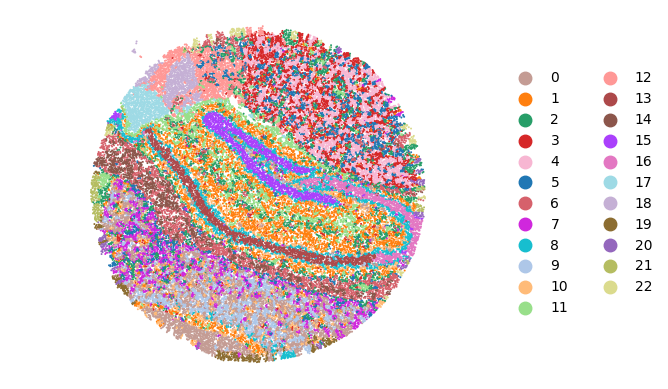
[21]:
%reload_ext autoreload
%autoreload 2
from utils import *
[29]:
mouse_brain_ct_comp(adata_pattern_subset)
<Figure size 2000x1500 with 0 Axes>

[34]:
to_plot['leiden_ca'] = to_plot['leiden']
to_plot.loc[to_plot[~to_plot['leiden'].isin(['8', '13', '16'])].index, 'leiden_ca'] = np.nan
to_plot = to_plot.sort_values('leiden_ca', ascending=True)
sns.scatterplot(data=to_plot, x='x', y='y', s=1, linewidth=0, legend=False, color='grey')
sns.scatterplot(data=to_plot, x='x', y='y', hue='leiden_ca', s=3, linewidth=0, legend=False, palette=pallete)
# move legend to right
plt.legend(bbox_to_anchor=(0.75, 1), loc=2, borderaxespad=0., ncols=1, frameon=False)
plt.axis('equal')
plt.axis('off')
WARNING:matplotlib.legend:No artists with labels found to put in legend. Note that artists whose label start with an underscore are ignored when legend() is called with no argument.
[34]:
(646.62, 5923.9800000000005, 520.828, 5830.1320000000005)
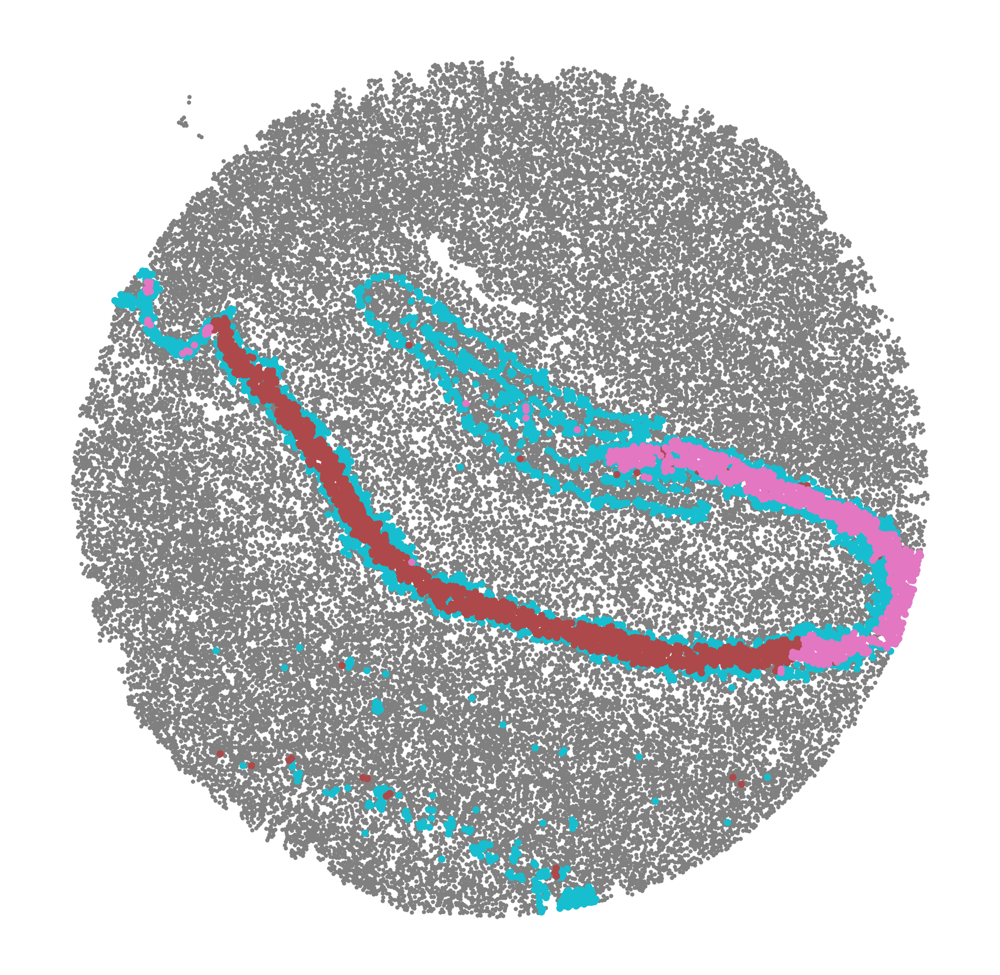
[35]:
adata_lri.obs['leiden'] = adata_pattern.obs['leiden']
adata_lri_sub = adata_lri[adata_lri.obs['leiden'].isin(['8', '13', '16'])]
sc.tl.rank_genes_groups(adata_lri_sub, groupby='leiden')
sc.set_figure_params(dpi=300, fontsize=10)
sc.pl.rank_genes_groups_dotplot(adata_lri_sub, standard_scale='var', n_genes=5, show=False, dendrogram=False, color_map='plasma')
WARNING: Default of the method has been changed to 't-test' from 't-test_overestim_var'
[35]:
{'mainplot_ax': <Axes: >,
'gene_group_ax': <Axes: >,
'size_legend_ax': <Axes: title={'center': 'Fraction of cells\nin group (%)'}>,
'color_legend_ax': <Axes: title={'center': 'Mean expression\nin group'}>}
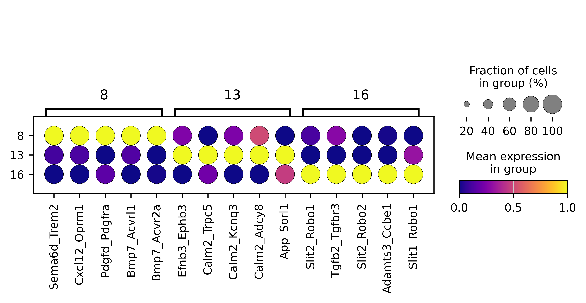
[36]:
to_plot['leiden_ca'] = to_plot['leiden']
to_plot.loc[to_plot[~to_plot['leiden'].isin(['2', '11', '1'])].index, 'leiden_ca'] = np.nan
to_plot = to_plot.sort_values('leiden_ca', ascending=True)
sns.scatterplot(data=to_plot, x='x', y='y', s=1, linewidth=0, legend=False, color='grey')
sns.scatterplot(data=to_plot, x='x', y='y', hue='leiden_ca', s=3, linewidth=0, legend=False, palette=pallete)
# move legend to right
plt.legend(bbox_to_anchor=(0.75, 1), loc=2, borderaxespad=0., ncols=1, frameon=False)
plt.axis('equal')
plt.axis('off')
WARNING:matplotlib.legend:No artists with labels found to put in legend. Note that artists whose label start with an underscore are ignored when legend() is called with no argument.
[36]:
(646.62, 5923.9800000000005, 520.828, 5830.1320000000005)
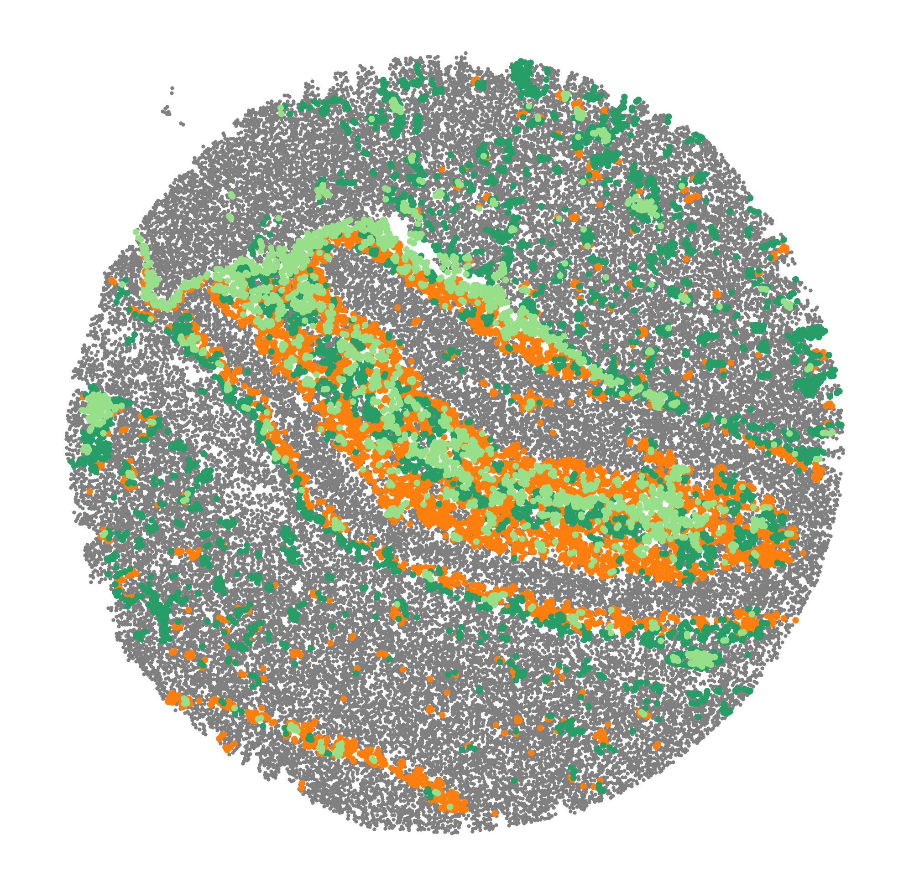
[37]:
adata_lri.obs['leiden'] = adata_pattern.obs['leiden']
adata_lri_sub = adata_lri[adata_lri.obs['leiden'].isin(['2', '11', '1'])]
sc.tl.rank_genes_groups(adata_lri_sub, groupby='leiden')
sc.set_figure_params(dpi=300, fontsize=10)
sc.pl.rank_genes_groups_dotplot(adata_lri_sub, standard_scale='var', n_genes=5, show=False, dendrogram=False, color_map='plasma')
WARNING: Default of the method has been changed to 't-test' from 't-test_overestim_var'
[37]:
{'mainplot_ax': <Axes: >,
'gene_group_ax': <Axes: >,
'size_legend_ax': <Axes: title={'center': 'Fraction of cells\nin group (%)'}>,
'color_legend_ax': <Axes: title={'center': 'Mean expression\nin group'}>}
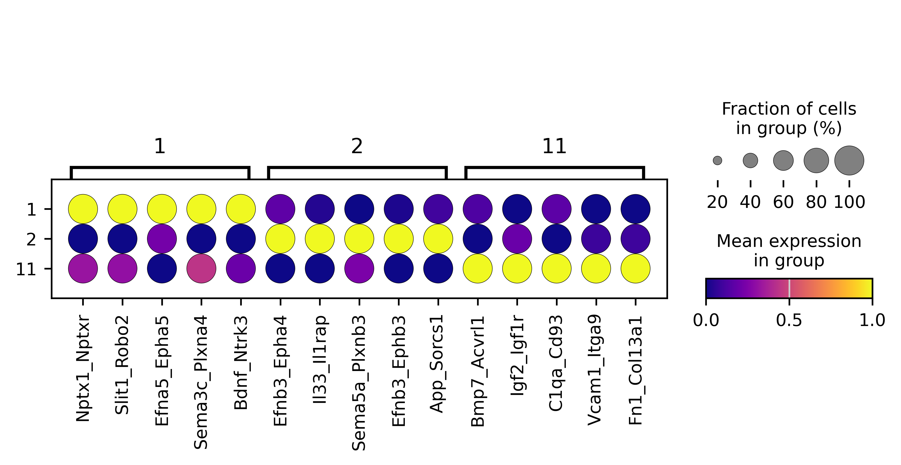
[38]:
to_plot['leiden_ca'] = to_plot['leiden']
to_plot.loc[to_plot[~to_plot['leiden'].isin(['5', '6', '14'])].index, 'leiden_ca'] = np.nan
to_plot = to_plot.sort_values('leiden_ca', ascending=True)
sns.scatterplot(data=to_plot, x='x', y='y', s=1, linewidth=0, legend=False, color='grey')
sns.scatterplot(data=to_plot, x='x', y='y', hue='leiden_ca', s=3, linewidth=0, legend=False, palette=pallete)
# move legend to right
plt.legend(bbox_to_anchor=(0.75, 1), loc=2, borderaxespad=0., ncols=1, frameon=False)
plt.axis('equal')
plt.axis('off')
WARNING:matplotlib.legend:No artists with labels found to put in legend. Note that artists whose label start with an underscore are ignored when legend() is called with no argument.
[38]:
(646.62, 5923.9800000000005, 520.828, 5830.1320000000005)
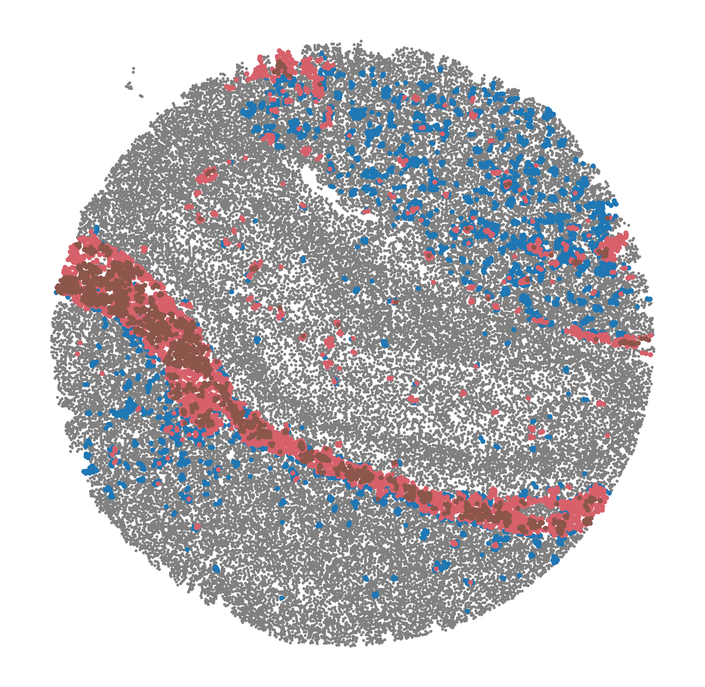
[39]:
adata_lri.obs['leiden'] = adata_pattern.obs['leiden']
adata_lri_sub = adata_lri[adata_lri.obs['leiden'].isin(['5', '6', '14'])]
sc.tl.rank_genes_groups(adata_lri_sub, groupby='leiden')
sc.set_figure_params(dpi=300, fontsize=10)
sc.pl.rank_genes_groups_dotplot(adata_lri_sub, standard_scale='var', n_genes=5, show=False, dendrogram=False, color_map='plasma')
WARNING: Default of the method has been changed to 't-test' from 't-test_overestim_var'
[39]:
{'mainplot_ax': <Axes: >,
'gene_group_ax': <Axes: >,
'size_legend_ax': <Axes: title={'center': 'Fraction of cells\nin group (%)'}>,
'color_legend_ax': <Axes: title={'center': 'Mean expression\nin group'}>}
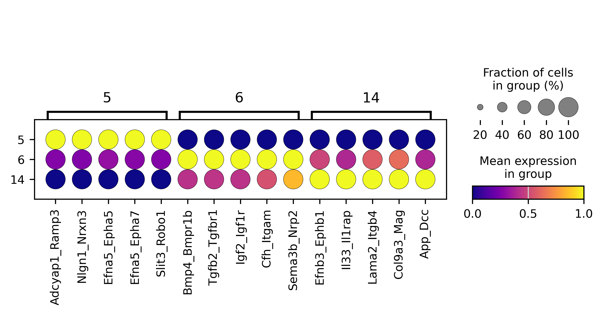
supp
[40]:
merged_df_edge, arr = op.er.pattern_enrichment_edge(idata,is_human=adata.uns['is_human'])
merged_df_node, arr = op.er.pattern_enrichment_node(idata,is_human=adata.uns['is_human'])
Using mouse LR pair dataset.
[41]:
drop_illness=['Toxoplasmosis','diabetic', 'cancer', 'carcinoma', 'Melanoma', 'Glioma', 'Cushing syndrome', 'infection', 'Amoebiasis', 'atherosclerosis', 'cardiomyopathy', 'leukemia']
if len(drop_illness) != 0:
merged_df_node = merged_df_node[~merged_df_node.Term.str.contains('|'.join(drop_illness))]
op.vis.enrichment(merged_df_node,x_key='label', cutoff=0.05, top_term=10,size=20, figsize=(3,10))
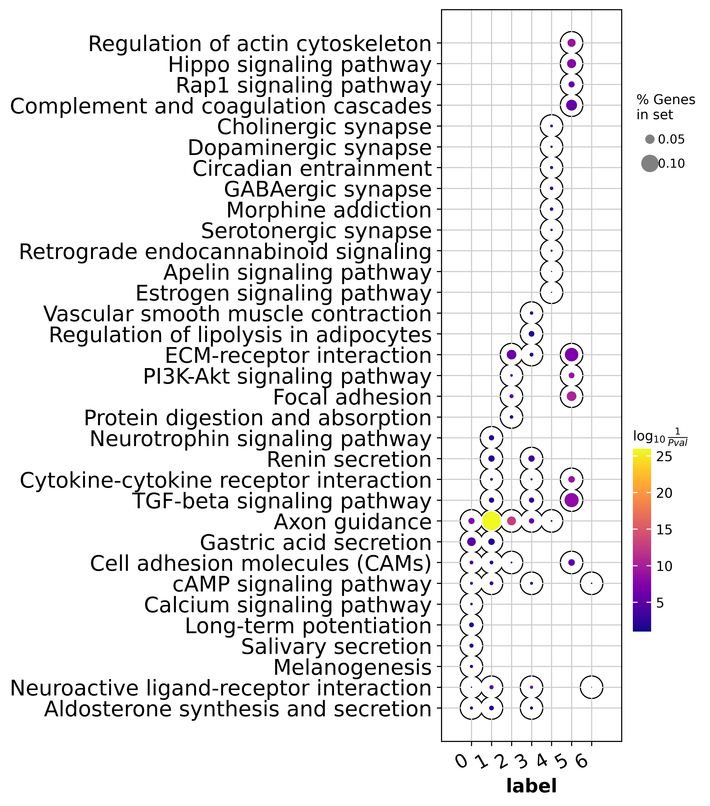
[42]:
idata = idata[:, idata.var['is_svi']==1]
adata, adata_lri, adata_pattern = op.cell_transform(idata, adata, label=adata.uns['cluster_key'])
adata_lri.obsm['spatial'] = adata[adata_lri.obs_names].obsm['spatial']
adata_pattern.obsm['spatial'] = adata[adata_lri.obs_names].obsm['spatial']
Added key cell_pattern in idata.uns
Added key cell_score in idata.uns
Added key interaction_pattern, interaction_score in adata.obsm
WARNING: Default of the method has been changed to 't-test' from 't-test_overestim_var'
WARNING: Default of the method has been changed to 't-test' from 't-test_overestim_var'
Added key rank_interaction_score_groups, rank_interaction_pattern_groups in adata.uns
[43]:
with plt.rc_context():
sc.set_figure_params(figsize=(3, 3), fontsize=10)
sc.pl.rank_genes_groups_dotplot(adata_lri, standard_scale='var', show=False, cmap='plasma', n_genes=2)
WARNING: dendrogram data not found (using key=dendrogram_cluster). Running `sc.tl.dendrogram` with default parameters. For fine tuning it is recommended to run `sc.tl.dendrogram` independently.
WARNING: You’re trying to run this on 119 dimensions of `.X`, if you really want this, set `use_rep='X'`.
Falling back to preprocessing with `sc.pp.pca` and default params.
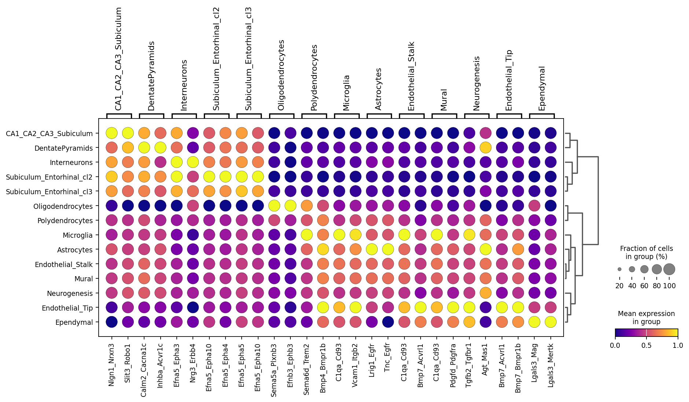